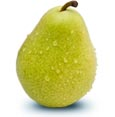

fruit is the seed-bearing structure in flowering plants (also known as angiosperms) formed from the ovary after flowering.
Fruits are the means by which angiosperms disseminate seeds. Edible fruits, in particular,
have propagated with the movements of humans and animals in a symbiotic relationship as a means for seed dispersal and
nutrition; in fact, humans and many animals have become dependent on fruits as a source of food.
[1] Accordingly, fruits account for a substantial fraction of the world's agricultural output,
and some (such as the apple and the pomegranate) have acquired extensive cultural and symbolic meanings.
APPLE
NUTRITION INFORMATION
1 serving = 140 g (1 medium)
Source of Vitamin C (6% Recommended Daily Intake per serving)
High in fibre (3 g per serving)
Sodium-free (1 mg per serving)
LOOK FOR
Well shaped, smooth skinned fruit that is free of bruises.
Brownish freckled areas do not affect flavour.
TO STORE
Store in perforated plastic bags in the refrigerator crisper.
Cold, humid storage ensures that apples maintain their crispness, juicy texture and full flavour.
Apples soften 10 times faster at room temperature.
TO PREPARE
Rinse and eat.To prevent browning, coat cut surfaces with lemon juice
BANANA
NUTRITION INFORMATION
1 serving = 140 g (1 large)
High in potassium (500 mg per serving)
Source of Vitamin C (15% Recommended Daily Intake per serving)
Source of fibre (3 g per serving)
Sodium-free (0 mg per serving)
Fat-free (0 g per serving)
LOOK FOR
Firm, unblemished bananas.
Yellow with brown speckles indicates a sweet tender fruit.
TO STORE
Keep at room temperature until desire ripeness.
For longer storage, once ripe, refrigerate.
The peel will darken but remains fresh.
TO PREPARE
Peel and eat. To prevent browning, coat surface with lemon juice.
Use over ripe bananas in baking.
PINEAPPLE
NUTRITION INFORMATION
1 serving = 140 g (2 medium slices)
Very high in Vitamin C (70% Recommended Daily Intake per serving)
Low in sodium(1 5 mg per serving)
Fat-free (0 g per serving)
LOOK FOR
Large plump, fruit with sweet fragrance and
crown of deep green (not brown) leaves.
Colour is not an indication of ripeness.
TO STORE
Use immediately or refrigerate uncovered for
two or three days.
TO PREPARE
Rinse, discard crown and bottom end.
Remove end on strips from top to bottom. Slice and core as desired.

PEAR
NUTRITION INFORMATION
1 serving = 140 g (1 medium)
High in fibre (5 g per serving)
Source of Vitamin C (10% Recommended Daily Intake per serving)
Sodium-free (0 mg per serving)
Fat-free (0 g per serving)
LOOK FOR
Firm, well shaped, fruit. Use fully ripe fruit for immediate use.
Minor scars and blemishes do not affect flavour.
TO STORE
Cover, refrigerate unwashed ripe fruit for up to three days.
Ripen firm fruit at room temperature in a paper bag until
it yields to gentle pressure at stem.
TO PREPARE
Rinse. To prevent browning, coat cut surfaces with lemon juice